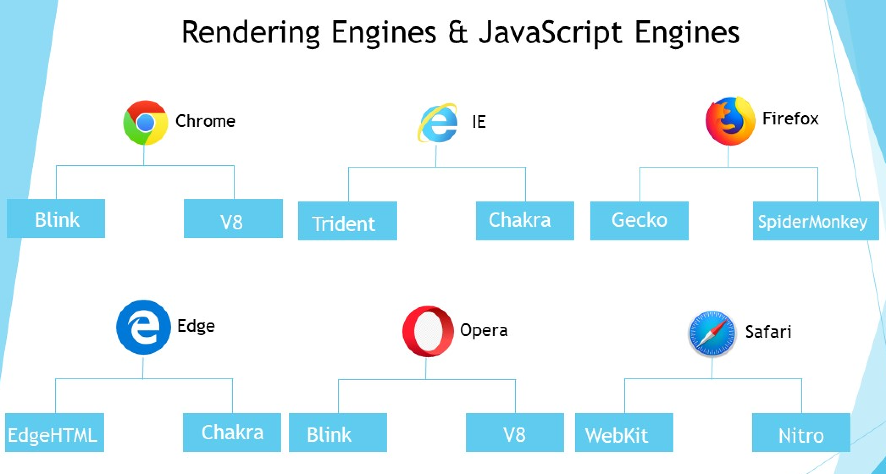

What is a Rendering Engine?
A rendering engine is a component of a web browser that renders web pages. It interprets HTML, CSS, and JavaScript and displays the content on the screen.
Blink
Blink is a rendering engine developed by Google as part of the Chromium project. It powers browsers like Google Chrome and Opera. Blink focuses on speed and efficiency, making web pages load faster.
Key Features of Blink:
- Multi-process Architecture: Ensures stability and security by isolating web pages in separate processes.
- High Performance: Optimized for speed, Blink uses techniques like pre-rendering and speculative loading to reduce load times.
- Advanced Graphics: Supports hardware acceleration for smooth rendering of complex graphics and animations.
- Support for Modern Web Standards: Fully supports HTML5, CSS3, and various APIs for rich web applications.
Gecko
Gecko is a rendering engine developed by Mozilla. It powers browsers like Firefox. Gecko emphasizes standards compliance and security, ensuring web pages are rendered correctly and securely.
Key Features of Gecko:
- span Standards Compliance: Gecko ensures web pages adhere to web standards, promoting cross-browser compatibility.
- Security Features: Incorporates various security mechanisms to protect users from malicious content.
- Extensible Architecture: Supports extensions and add-ons, allowing users to customize their browsing experience.
- Support for Modern Web Technologies: Includes support for HTML5, CSS3, and advanced JavaScript features.
V8 JavaScript Engine
The V8 JavaScript Engine, developed by Google, is an open-source JavaScript engine used in Google Chrome and Node.js. It compiles JavaScript directly to native machine code before executing it, which makes it incredibly fast.
Key Features of V8:
- Just-In-Time (JIT) Compilation: Compiles JavaScript to native machine code at runtime, significantly boosting performance.
- Garbage Collection: Efficient memory management through automatic garbage collection, which helps in reclaiming memory occupied by objects that are no longer in use.
- High Performance: Optimized for both client-side and server-side JavaScript applications, making it suitable for a wide range of applications.
- Support for ECMAScript Standards: Implements the latest ECMAScript standards, ensuring compatibility with modern JavaScript features.
- Integration with WebAssembly: Supports WebAssembly, enabling high-performance web applications.
SpiderMonkey JavaScript Engine
SpiderMonkey is the first JavaScript engine, developed by Netscape and currently maintained by Mozilla for use in Firefox. It serves as the baseline for several JavaScript-based technologies and frameworks.
Key Features of SpiderMonkey:
- Just-In-Time (JIT) Compilation: Uses multiple JIT compilers to optimize JavaScript execution speed dynamically.
- Garbage Collection: Incorporates incremental and generational garbage collection for efficient memory management.
- ECMAScript Compliance: Implements the latest ECMAScript standards, ensuring support for modern JavaScript features.
- Debugging and Profiling Tools: Includes advanced tools for debugging and profiling JavaScript code, aiding developers in optimization.
- Integration with Rust: Utilizes Rust for improved performance and safety in critical components.